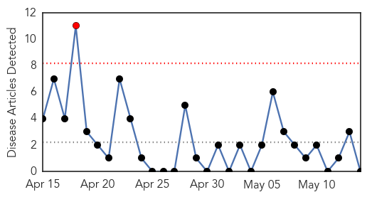
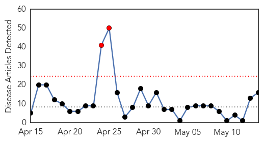
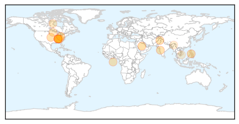
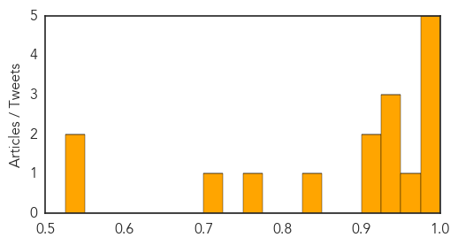

Mumps
30-Day Web Trend
1 alerts, 0 warnings

30-Day Twitter Trend
0 alerts, 0 warnings

Article Locations

Article Confidences

Top Articles:
-
No articles found for May 14, 2014
Top Tweets:
-
No tweets found for May 14, 2014
Measles
30-Day Web Trend
2 alerts, 0 warnings

30-Day Twitter Trend
0 alerts, 0 warnings

Article Locations
Article Confidences
Top Articles:
- 0.991
- Measles cases put TN health-care providers on 'heightened awareness'
- 0.989
- Measles cases put TN health-care providers on ‘heightened awareness’
- 0.988
- Ohio confirms 73 cases of measles, more than 300 cases of mumps
- 0.987
- How U.S. Hospitals Are Planning To Stop The Deadly MERS Virus
- 0.976
- Outbreaks Can Happen Anywhere, Even Ohio
- 0.970
- Measles Cases Investigated In Five Counties; Mostly In West TN
- 0.933
- Health Department: Suspect Cases of the Measles Were in Direct, Close Contact with Confirmed Case
- 0.931
- Doctors unaware of measles-free mission
- 0.927
- Govt ordered to combat German measles
- 0.916
- Five cases of measles reported in TN
- 0.909
- Following confirmed case of measles in Clay County, more cases likely
- 0.834
- Trial drug may help fight measles
- 0.756
- Measles vaccine eliminates cancer in ‘landmark’ medical trial — RT USA
- 0.701
- Pre-school boy is Edmonton's 9th confirmed case of measles
- 0.547
- Children in measles hot spots continue to be vaccinated
- 0.526
- W’shop on district measles surveillance in Mokokchung
Top Tweets:
-
No tweets found for May 14, 2014